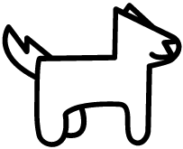

<!-- <nav class="navbar navbar-expand-lg navbar-light bg-light"> -->
<nav class="navbar navbar-expand-lg fixed-top navbar-scroll">
  
  

  <button class="navbar-toggler" type="button" data-toggle="collapse" data-target="#navbarNav" aria-controls="navbarNav" aria-expanded="false" aria-label="Toggle navigation">
    <span class="navbar-toggler-icon"></span>
  </button>

  <div class="collapse navbar-collapse " id="navbarNav">
    <ul class="navbar-nav ml-auto">                   <!-- the ml-auto keeps navbar content on the right side -->
      <li class="nav-item mr-4">
        <a class="nav-link" href="#">Buscar Mascota</a>
      </li>
      <li class="nav-item mr-4">
        <a class="nav-link" href="#">Adopción</a>
      </li>
      <li class="nav-item mr-4" *ngIf="!this.showUser">
        <a class="nav-link" routerLink="/login">Inicio de Sesión</a>
      </li>
      <li class="nav-item mr-4" *ngIf="this.showUser">
        <button mat-button [matMenuTriggerFor]="menu" type="button" class="btn btn-success nav-lin" matTooltip="Opciones">
          {{this.userLogged.userLogged.userName}}
        </button>
        <mat-menu #menu="matMenu">
          <button mat-menu-item routerLink="/dashboard">Dashboard</button>
          <button mat-menu-item (click)="closeSession()">Cerrar Sesión</button>
        </mat-menu>
      </li>
    </ul>
  </div>

</nav>
